| 狩猟 |
専門職：狩人 |
| 画像 | 名称 | 場所 | |||
| 台湾名 | |||||
| 狩猟Lv1 | |||||
| 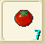 | トマト | 1種類：ファンブルグ付近。どこでも取れる | |||
| 番茄 | |||||
| 鹿の皮 | 1種類：アリュート側(630.173)付近 複数：イール北の山脈(？)付近 |
||||
| 鹿皮 | |||||
| 小麦粉 | 複数：ファンブルグ東門を出て東の橋を渡って(694.270)付近 | ||||
| 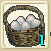 | 卵 | 複数：ファンブルグ東門を出て東の橋を渡って(577.237)付近 | |||
| 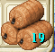 | 神聖米 | ||||
| 神聖米 | |||||
| 狩猟Lv2 | |||||
| 牛乳 | 複数：イール付近 | ||||
| 牛? | |||||
| 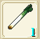 | ねぎ | 複数：イールの北の山脈(650.240)付近 | |||
| ? | |||||
| 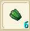 | ピーマン | 複数：ファンブルグ東門を出て東の橋を渡って、南にある海岸(？)付近 | |||
| 青椒 | |||||
| イシダイ | ミネガル島(648.389) | ||||
| 石鯛魚 | |||||
| 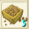 | 大豆 | ||||
| 大豆 | |||||
| 狩猟Lv3 | |||||
| 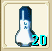 | 塩 | 複数：イールの北東の海岸(695.334)付近 1種類：アリュート側(710.149)付近 |
|||
| 鹽 | |||||
| 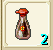 | しょうゆ | 1種類：ファンブルグ東門を出て東にある畑(501.161) | |||
| ?油 | |||||
| 白菜 | |||||
| 白菜 | |||||
| 狩猟Lv4 | |||||
| 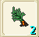 | クレソン | 1種類：アリュート側(604.50)付近。 複数：ファンブルグ北の花畑入り口付近 |
|||
| 芹菜 | |||||
| 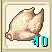 | 鶏肉 | 複数：ファンブルグ西門を出て北の岬(439.39)付近 | |||
| ?肉 | |||||
| 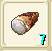 | たけのこ | 複数：ファンブルグ西門を出て北の花畑入り口(501.49)付近 | |||
| 竹筍 | |||||
| 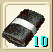 | のり | 1種類：アリュート側(558.14)付近 1種類：フレイア(627.27)付近 1種類：キリの東(285.221)付近 |
|||
| 海苔 | |||||
| あじ | 1種類：アリュート側(548.14)付近 | ||||
| 竹莢魚 | |||||
| ムササビの皮 | 複数：ホーン山頂(59.25)付近 | ||||
| 狩猟Lv5 | |||||
| 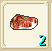 | 牛肉 | 複数：ファンブルグ西門を出て北の山(454.132)付近 1種類：キリの東(222.222)付近 |
|||
| 牛肉 | |||||
| 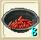 | しょうが | 複数：ファンブルグ東門を出て東の山(496.141)付近 | |||
| 薑 | |||||
| 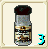 | コショウ | 複数：ファンブルグ東門を出て南(502.273)付近 1種類：キリの南東(359.361)付近 |
|||
| 胡椒 | |||||
| あなご | 1種類：ウィルノア側東の海岸(548.14)付近 | ||||
| 星鰻 | |||||
| 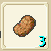 | じゃがいも | クルクス島(258.869) | |||
| 馬鈴薯 | |||||
| 豚肉 | フレイア(303.441) | ||||
| 豬肉 | |||||
| 恋のリンゴ | セレーネ(267.558) | ||||
| 戀愛蘋果 | |||||
|
蓋雷布倫森林(170.150)
|
|||||
| 大�K蝦 | |||||
|
梅布爾隘地(202,161)
|
|||||
| 鮭魚 | |||||
| ごまたん | |||||
| 芝麻娃娃 | |||||
| 狩猟Lv6 | |||||
| 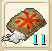 | お米 | イールの北東の山(67.288)付近 | |||
| 米 | |||||
| 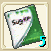 | 砂糖 | ||||
| 砂糖 | |||||
| マイティナイト | |||||
| 鋼騎之礦 | |||||
| 狩猟Lv7 | |||||
| バター | |||||
| 高級?油 | |||||
| 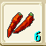 | 唐辛子 | ||||
| 辣椒 | |||||
| 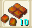 | カレー粉 | ||||
| ?哩塊 | |||||
| じゃがいも | |||||
| 狩猟Lv8 | |||||
| 蟹 | |||||
| ?蟹 | |||||
| 霜降牛肉 | |||||
| スワンプヴァイパー | |||||
| ?地毒蛇 | |||||
| アルパネスメロン | |||||
| 阿巴尼斯哈密瓜 | |||||
| 狩猟Lv9 | |||||
| イセエビ | クルクス(147.402) | ||||
| 伊勢蝦 | |||||
| うに | |||||
| 海膽 | |||||
| 狩猟Lv10 | |||||
| フカヒレ | アルパネスの町を出てずっと東(320.123)付近 アルパネスの町を出てずっと西(43.183)付近 |
||||
| 魚翅 | |||||
| 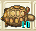 | スッポン | (67.135)付近 | |||
| 甲魚 | |||||
| ツチノコ | 稀に採れる | ||||
| 生物？ | |||||